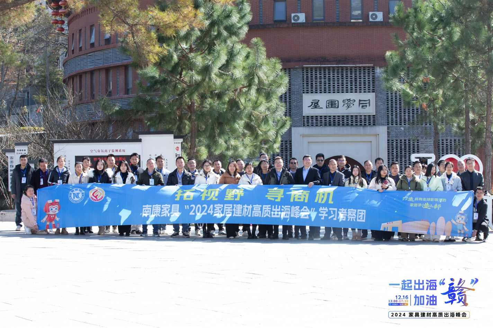
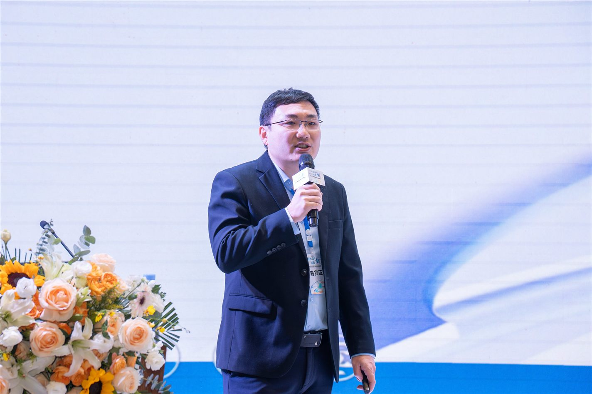

MEDIA-03
第三方报道 · MEDIA COVERAGE
董立鑫聚焦家居建材全球化，提出企业出海三大核心命题
Three core propositions for home & building-materials going global.
第三方媒体报道：海鑫汇创始人兼CEO董立鑫发起并承办首届和君小镇出海峰会，联合韩国 Coupang、大健云仓等机构及喀麦隆、墨西哥、泰国代表，探讨家居建材企业高质量出海路径。来源：大数跨境。
报道概述
海鑫汇创始人兼CEO，和君咨询合伙人董立鑫发起并承办首届和君小镇出海峰会，与和君商学董事长李鹏飞、对外经济贸易大学李海莲教授及韩国 Coupang、小数汇智、大健云仓等机构，来自非洲喀麦隆、南美墨西哥、东南亚泰国的代表共同探讨家居建材企业高质量出海路径。

海鑫汇视角
家居建材出海的第一道坎不是产品，而是“去哪个市场、用什么路径、找谁合作”——三大命题卡住了绝大多数制造企业。

原文链接
本文为第三方媒体对海鑫汇创始人兼CEO董立鑫的公开报道整理，首发于 大数跨境。 查看官网原文 →
想把“出海”从口号变成可执行的路径？先做一次免费首诊判断。
预约免费首诊 →